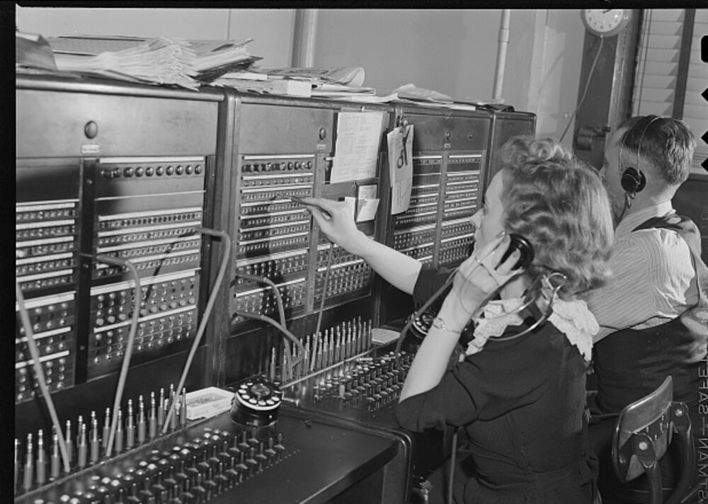

flatpak-spawn --host really does put your shell on
the host. It also quietly hands the controlling terminal to the wrong process
— and nothing tells you.

A Flatpak portal is a switchboard operator. The sandboxed app cannot reach
the host directly; it asks to be connected, and a trusted intermediary patches
the circuit on its behalf. That is the entire security model — mediated access
rather than direct access, with someone in the middle who can log the request,
scope it, or refuse it. When flatpak-spawn passes file descriptors
0, 1 and 2 across D-Bus, it is handing over a plug to be pushed into a jack.
Hold onto that image, because the bug below is exactly the thing a switchboard cannot do.
The advice is everywhere: if a Flatpak app needs to touch the host, use
flatpak-spawn --host. For a terminal emulator that means overriding
the shell command, and it works — the shell that opens really is running on your
real system, in your real home directory, in the host's mount namespace. I
verified that part months ago and shipped it.
What I did not check was whether the shell was healthy. It wasn't. Every new window opened with this:
bash: cannot set terminal process group (-1): Inappropriate ioctl for device
bash: no job control in this shell
tty: ttyname error: No such deviceYou still get a prompt. ls works, git works, your
files are all there. But Ctrl+Z does nothing, fg and
bg are gone, and tty cannot name your terminal. It is
the kind of breakage you learn to step around without ever diagnosing.
In switchboard terms: the operator patched the voice circuit through perfectly. Both parties can hear each other. What did not come across the patch is everything that isn't on the wire — the registrations back at the exchange that say who this line belongs to, and who gets rung when something happens on it. The shell got the audio and none of the line. It could talk, but it could not be rung.
Three kernel concepts sit underneath this, and most of us never have to think about any of them:
| Concept | What it is |
|---|---|
| Process group | Processes that receive terminal signals together. One pipeline is one process group. |
| Session | A collection of process groups, created by setsid(). The creator becomes the session leader. |
| Controlling terminal | One terminal, owned by one session. The kernel routes SIGINT, SIGTSTP, SIGHUP and SIGWINCH to the foreground process group of that session. |
Two rules matter here, both enforced by the kernel:
TIOCSCTTY — the ioctl that claims a terminal — succeeds only
if the caller is a session leader and the terminal
is not already the controlling terminal of another session.Rule 1 is a one-shot land grab. The first session to claim a PTY owns it permanently, and no one else can take it. That single sentence explains the entire bug.
alacritty
└─ openpty() master kept by alacritty, slave for the child
└─ fork()
└─ setsid() child becomes a session leader
TIOCSCTTY ← claims the PTY; it is free, so this succeeds
exec bash -l bash inherits the terminal; job control worksTextbook, and entirely correct. The process that execs into the
shell is the session leader holding the terminal.
Under Flatpak, that final exec is not the shell. It is
flatpak-spawn, a proxy whose whole job is to make a D-Bus call to
the Flatpak portal — which then starts the real shell out on the host and passes
the file descriptors across.
So the process tree splits in two, and ps shows it plainly:
1824050 alacritty (in the sandbox)
1824071 └─ flatpak-spawn --host bash -l pts/0 Ssl+ ← sandbox side
6183 flatpak-portal (on the host)
1824076 └─ bash -l ? Ss ← the actual shellRead the two right-hand columns carefully. flatpak-spawn — a
proxy that will never read a keystroke in its life — is Ss+ on
pts/0: session leader, foreground process group, holding the
terminal. The real bash shows ?. No controlling
terminal at all. It is not even a descendant of Alacritty; it is a child of the
portal, in a different process tree entirely.
Straight from the kernel — field 7 of /proc/<pid>/stat is
tty_nr, the controlling terminal, where 0 means
none:
$ awk '{print $7}' /proc/1824076/stat
0There it is. Alacritty did everything right. But its child
was the proxy, not the shell — so the proxy performed the land grab. By rule 1
that claim is exclusive and permanent, so when the portal later tries to give
the same terminal to the real shell, it can't. The shell starts with nothing,
tcgetpgrp() returns -1, and job control is disabled.
The sandbox escape didn't fail. It succeeded one process too early.
tty: ttyname error: No such device has a completely different
cause, which is worth separating because it looks like part of the same
failure.
ttyname() does not ask the kernel what your terminal is called.
It stat()s the descriptor and then walks /dev/pts
looking for a device node with a matching device number. That only works if the
PTY's node is visible in your /dev/pts.
It isn't. Flatpak's bwrap gives the sandbox a private devpts instance:
sandbox: 2148 2141 0:158 / /dev/pts rw,nosuid,noexec,relatime - devpts …
host: 43 39 0:28 / /dev/pts rw,nosuid,noexec,relatime - devpts …0:158 against 0:28 — different filesystems. The PTY
came from the sandbox's instance. The host-side shell holds a perfectly valid
descriptor to it, but no path on the host names it, so ttyname()
fails. Everything that resolves a terminal by name goes with it:
tty, who, w, utmp bookkeeping.
/dev/tty still works, because that resolves through the controlling
terminal rather than a path.
Before the mechanics, the symptom — because this one has a face, and you may have seen it without knowing what you were looking at.
Zoom the terminal in. Alacritty recomputes the grid at the new cell size and redraws the whole screen, so the zoom itself works. But the shell is never told the size changed, and readline doesn't repaint the screen — it repaints its own region, the prompt and the line you are editing, using the width it still believes in. One band of the terminal gets rewritten against stale geometry while everything around it is already reflowed. Lines wrap in the wrong place. Text smears near the cursor.
It reads as "the scaling is centred on part of the terminal." It isn't centred on anything — that band is simply the only region a stale-width process is actively redrawing.
| Works? | Why | |
|---|---|---|
| Shell runs on the host | ✅ | its mount namespace matches the host's exactly |
Ctrl+C, SIGHUP on close | ✅ | flatpak-spawn catches these and re-sends them through the portal |
Ctrl+Z, fg, bg, jobs | ❌ | needs a controlling terminal; there isn't one |
tty, who, utmp | ❌ | private devpts, no resolvable name |
| Live window resize | ❌ | see below |
The signal forwarding is visible in the proxy's own signal mask:
$ grep SigBlk /proc/1824071/status
SigBlk: 00000000000a4a07
→ HUP INT QUIT USR1 USR2 TERM CONT TSTPEight signals, blocked so they can be drained through signalfd
and forwarded to the host process. SIGWINCH (28) is not
among them. So when you resize the window, the kernel delivers
SIGWINCH to the foreground process group of the PTY — which is
flatpak-spawn — and it is dropped on the floor. Anything already
running (vim, less, htop) never learns
the terminal changed size. Newly started programs are fine, because they read
the size directly with TIOCGWINSZ. That is exactly why the
misbehaviour feels random in daily use.
Back at the switchboard: the operator relays eight kinds of supervisory signal down the line and silently drops the ninth. Nobody thought to pass on "the other party has moved to a bigger room."
An Alacritty maintainer's passing suggestion was to wrap the shell in
script(1), which allocates a fresh PTY and relays between the two.
Right shape, wrong outcome, twice over:
script out of
util-linux-core; /usr/bin/script does not exist on a
default install. Depending on a host binary isn't safe in a package strangers
install.script does setsid() + TIOCSCTTY in its
child — that is its entire purpose. Run it inside the sandbox and its child is
flatpak-spawn, so the proxy ends up owning the new PTY too.
Identical failure, one layer down.It would only help if it ran on the host, allocating the PTY there.
Which is precisely what Ptyxis does, and why it needs an entire second binary to
do it: ptyxis-agent runs on the host, creates PTYs there, and
passes the master descriptor back into the sandbox over a socket
(--forward-fd=3, visible in any process list). Ownership never
crosses the boundary, so there is no conflict to resolve. Alacritty has no agent
and no way to accept a foreign PTY master, so that route is closed.
The answer came from an experiment that was supposed to fail. Inside the sandbox, open a PTY from Python, deliberately do not claim it, and hand the slave to a host process through the portal:
master, slave = pty.openpty() # no setsid(), no TIOCSCTTY
subprocess.Popen(["flatpak-spawn", "--host", "bash", "-c", probe],
stdin=slave, stdout=slave, stderr=slave)What came back from the host side:
tty_nr : 34816 ← nonzero. It HAS a controlling terminal.
/dev/tty : openable
sid/pid : 1834902/1834902A bare awk exec'd through the portal reports the same, which
locates the mechanism exactly: the portal's own child setup already
makes the host process a session leader and gives it the terminal —
automatically, with no cooperation from the app. It works every single time the
terminal is free.
So the fix is subtraction, not addition. Nothing needs to be built to acquire the terminal. Something just needs to stop stealing it first.
This is also where the switchboard analogy stops being a metaphor and starts
being a contrast. A real operator can transfer a line — unplug it here, plug it
in there, reassign who the subscriber is. TIOCSCTTY cannot. The
claim is first-come and permanent, so once the proxy is on the books, nobody can
ever be registered in its place. Which is why the answer is not "hand the line
over" but "run a fresh line, and let the operator register it to the right party
from the start."
Which makes the whole fix a small relay that sits between Alacritty and
flatpak-spawn and opens a second PTY it never claims:
alacritty ─(outer PTY, claimed on the relay — unavoidable)─ relay
│
(inner PTY, left unclaimed)
│
flatpak-spawn --host ──▶ portal ──▶ bash -l
claims it ✓Alacritty claims the outer PTY on the relay, which is fine — the relay has no use for job control. The inner PTY is passed along untouched, so the portal gives it to the shell, where it belongs. Two more things fall out of the sandwich:
SIGWINCH. It copies the new size
onto the inner PTY. Live resize works — better than it did before.python3 ships in the freedesktop Platform runtime, so this is
about sixty lines inside the app with no host dependency at all. It is
script(1) minus the one thing script insists on
doing.
--device=all fixes ttyname()Adding --device=all to finish-args makes bwrap
bind-mount the host's /dev rather than building a private one. The
sandbox then reports devpts 0:28 — the same instance as the host —
and the PTY becomes a real, nameable device:
tty() : /dev/pts/15
tty_nr : 34831The permission looks alarming and deserves to be stated plainly, but it
grants nothing new here: the app already holds
--talk-name=org.freedesktop.Flatpak, which is arbitrary command
execution on the host. Full /dev is strictly less than that. In a
package that did not already have host execution, this would be a real
escalation and you should not copy it blindly.
| Arrangement | Controlling terminal | tty | Job control | Live resize |
|---|---|---|---|---|
| Alacritty native, no sandbox | yes | ✅ | ✅ | ✅ |
Flatpak + flatpak-spawn --host bash -l | no | ❌ | ❌ | ❌ |
| Flatpak + unclaimed-PTY relay | yes | ❌ | ✅ | ✅ |
Flatpak + relay + --device=all | yes | ✅ | ✅ | ✅ |
# 1. Does the host-side shell have a controlling terminal?
# Field 7 of /proc/<pid>/stat is tty_nr. 0 means none.
pgrep -x bash | while read p; do
echo "$p tty_nr=$(awk '{print $7}' /proc/$p/stat) $(tr '\0' ' ' </proc/$p/cmdline)"
done
# 2. Who is holding the terminal instead? Look for Ss+ on a pts.
ps -eo pid,ppid,tty,stat,args | grep flatpak-spawn
# 3. Is the sandbox's devpts a separate instance?
grep devpts /proc/self/mountinfo
flatpak run --command=sh <app-id> -c 'grep devpts /proc/self/mountinfo'
# 4. Which signals does the proxy forward?
grep SigBlk /proc/<flatpak-spawn-pid>/statusHaving fixed the terminal, the obvious question was what else a shell loses crossing the boundary. Three more things, and they fail in three different ways — which turns out to be the useful part.
flatpak-spawn --host does not hand the sandbox's environment to
the host process; the portal starts host processes from the host session's
environment. Traced across the boundary:
relay (sandbox) TERM=alacritty
flatpak-spawn (sandbox) TERM=alacritty
bash -l (host) TERM=<UNSET>That laundering is mostly a feature — it strips LD_LIBRARY_PATH,
XDG_CONFIG_HOME, container=flatpak, so host programs
don't start reading the runtime's configuration. But the casualty list also
includes everything a terminal exists to announce about itself. With
TERM unset:
tput colors: tput: No value for $TERM and no -T specified
infocmp: FAILS
clear: TERM environment variable not set.
less: tput: No value for $TERM and no -T specifiedNo colour, and no ncurses program working at all. Fixed with an explicit
--env allowlist — an allowlist, not a bulk forward, because the
laundering is protecting the host and should stay.
Forwarding TERM=alacritty only helps if the host has a matching
terminfo entry, and a sandboxed app cannot install one.
alacritty-direct is already missing on this machine. So the shell
gets a host-side bootstrap that checks infocmp "$TERM" and degrades
to xterm-256color when the host has never heard of the terminal.
This is precisely why Ptyxis announces xterm-256color: VTE's
terminfo is universally present, so it never needs a host-side file at all.
Alacritty opens a new window in the current directory by reading
/proc/<tcgetpgrp(pty)>/cwd. The sandbox sees five processes;
the host has 491, and the shell is not among them. Every new window opened in
$HOME, wherever you actually were.
I wrote this one off as unfixable — it wants OSC 7, and Alacritty doesn't implement it. That was wrong, and wrong in an instructive way. Alacritty is not reading the shell's cwd. It reads the cwd of whatever holds the foreground process group of its own PTY — which is the relay, a process on our side of the boundary, in the sandbox's own PID namespace. And the shell already announces its directory in-band, where the relay sees every byte of it. So the relay follows along, and Alacritty's existing lookup starts returning the right answer with no changes to Alacritty:
relay cwd at start : /home/me
relay cwd after shell cd : /home/me/zz-marker-dir
relay cwd after second cd : /home/me/my-progsTwo report formats are recognised: OSC 7, the widely-implemented
file:// URI, and OSC 3008, the shell-integration protocol Fedora's
bash uses. OSC 7 is absent on this host because vte.sh only arms
itself for VTE terminals — which is exactly why supporting both matters.
Launching a second window from the desktop shell produced this:
Unable to create socket: Os { code: 98, kind: AddrInUse, message: "Address already in use" }
Unable to create log file: File exists (os error 17)Alacritty names its IPC socket and its log file after its own process ID,
which is a perfectly good unique key everywhere except here. Every
flatpak run gets a fresh PID namespace, so every instance is
PID 2:
host PID 2129727: NSpid: 2129727 2
host PID 2129960: NSpid: 2129960 2
host PID 2130588: NSpid: 2130588 2The runtime directory and /tmp are shared per application,
not per instance — which is precisely why alacritty msg can reach
across instances at all — so the first instance wins both names and every one
after it collides. The banner is cosmetic; the consequence is not. Those
instances have no IPC socket of their own, so alacritty msg from
their windows drives whichever instance won the race, opening windows on the
wrong one.
Note the symmetry with the previous section. There the namespace made a PID
invisible; here it makes PIDs non-unique. Same boundary, two
opposite failures, both from code that was correct on an ordinary system.
/.flatpak-info carries an instance-id that genuinely is
unique per instance, so the launcher uses that instead of a PID that isn't.
In October 2025, someone offered to maintain an Alacritty Flatpak on Flathub (#8719). It went the way the previous four did. But one line in that thread is worth pulling out, because it is a technical claim rather than a preference:
flatpak provides mechanisms that give applications the ability to run processes outside of the sandbox for this exact use case. Basically supporting flatpak is just a matter of spawning the shell on the host.
That was said in Flatpak's defence, and this repository is what happens when you actually try it. Spawning the shell on the host is where the work starts. Past that point sit five separate failures, each needing its own fix, none of them obvious until measured:
| What breaks | Why |
|---|---|
| Job control | the proxy claims the controlling terminal |
Colour, clear, less | the portal launders TERM away |
| terminfo | unreachable; a sandbox cannot write to the host |
| "New window here" | the PID namespace hides the shell |
alacritty msg, and per-instance state | the binary is absent host-side; PIDs collide |
This is not an argument that upstream should change their mind. That is their call, they have made it five times, and maintaining a package you do not believe in is nobody's idea of a good outcome. It is narrower than that: the claim made in Flatpak's defence substantially understated the work, and the people making it were, like the people rejecting it, arguing from assertion rather than from a build. The work turns out to be finite — every item above is fixed here — but "just spawn the shell on the host" was never true.
flatpak-spawn --host is repeated everywhere as the
answer for host access from a sandbox, and for running a one-shot command it
genuinely is. What nobody mentions is that it gives the controlling terminal to
the proxy rather than to the process you care about — so anything that needs a
real terminal session comes out subtly crippled while appearing to work.
The wider point outlasts terminals: a sandbox boundary is not only a filesystem boundary. It cuts four things a terminal depends on, in four different places:
| State | Lives in | How the boundary breaks it | Answer |
|---|---|---|---|
| Controlling terminal | the kernel | single-owner; the proxy claims it first | stop claiming it |
TERM/COLORTERM | the environment | laundered by the portal | explicit allowlist |
| terminfo | the host filesystem | a sandbox cannot write there | degrade gracefully |
| Process inspection | the PID namespace | the shell is invisible | read something on your own side |
Every one of those boundaries is drawn correctly. That is what makes this interesting — none of it is a Flatpak bug. It is that a terminal has state which legitimately must cross a boundary built to stop state crossing.
And the two fixes that mattered most were both subtraction or redirection, not machinery: stop claiming the terminal, and read the process you already control. Both times the instinct was to build something to reach across the boundary, and both times the answer was already sitting on this side of it. When a sandbox hides something, the question is not "how do I reach across" but "what on my side already knows?"
It is also a considerably sharper argument for Alacritty upstream's refusal to support Flatpak than the one they actually made.